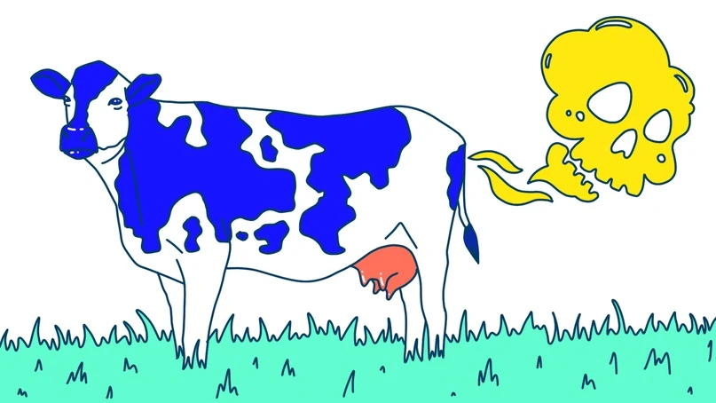

Данила Блюз принес ужасные вести! Оказывается, матушке-природе вредят не только заводы и автомобили, но и такая безобидная с виду вещь, как кокаин. Нужно срочно доложить об этом Грете Тунберг, чтобы она поехала в Колумбию и накричала там на какой-нибудь местный наркокартель
Казалось бы, ну какой вред от наркоманов? Подумаешь, старушек грабят в подъездах. Кому эти старушки нужны? Подумаешь, гепатит со СПИДом переносят! Так они ж среди своих переносят! Нормальный человек разве заболеет СПИДом? Нет, только гомик, торчок и богоотступник!

На первый взгляд наркоманы и вся их наркоиндустрия выглядят безобидно и носят характер опасности чисто социальный. Такими вещами должна полиция заниматься. Но внезапно экологи, эти охочие до любой ерунды ребята, выяснили, что торчки наносят вред не только заплуталым старушкам и гомикам: они подвергают опасности нашу дорогую, любимую, всеми оберегаемую окружающую среду.
Согласно недавним исследованиям, ущерб от вырубки лесов наркоторговцами в Южной Америке составил 214 миллионов долларов. Эта сумма вдвое превышает бюджет, выделяемый на сохранение местной флоры. Деревья картель рубит для прокладки все новых и новых маршрутов, по которым будет доставляться кокаин счастливым гражданам США и Евросоюза. Плюс сама индустрия по производству наркотиков требует немалых площадей: плантации, цеха, бараки, иногда даже целые аэродромы. 8% углеродных выбросов обусловлены вырубкой лесов.
Отмывают нажитое барыги тоже не самым полезным для климата производством — деньги они вкладывают в сельское хозяйство и скотоводство, которые вредят природе не меньше, чем химзаводы. Животноводческие и земледельческие фермы убивают почву, загрязняют близлежащие водоемы и тоже способствуют вырубке лесов для пастбищ и полей. Стадо из 200 коров за год напердит столько метана, сколько обычный «Хаммер» не выработает и за 10 лет. Ученые, конечно, пытаются пустить коровий пердеж на благое дело — ловят его в банки, трубками закачивают из коровьих жоп в баллоны, но пока особых успехов их изыскания не принесли.
И если бы дело ограничивалось одними лишь злобными наркокартелями! Нет, рядовой торчок загрязняет природу. И не только пустыми шприцами и дырявыми бутылками.

Ученые из Королевского колледжа Лондона обнаружили серьезную концентрацию кокаина в Темзе. Причем она не снижается даже в будние дни, то есть Лондон — это город, который все время угашен! Попадает наркотик в Темзу через наркоманскую мочу. Фильтры, которые стоят на очистных сооружениях, недостаточно мощны, чтобы задержать в себе остатки кокаина.
Изменение состава воды уже влияет на местную рыбу, которая более восприимчива к наркотику, чем человек. В частности, учеными зафиксировано гиперактивное поведение угрей. Биохимики из Неаполитанского университета имени Фридриха II ранее наблюдали за этим видом рыб в воде с небольшим содержанием кокаина — выяснилось, что угри не только стали вести себя активнее: вещество накапливалось у них в мозгу, мышцах, жабрах и коже.
В последние годы с развитием мессенджеров и прочих анонимных средств связи в Лондоне наблюдается наркотический бум. По данным независимого исследовательского центра Global Drag Survey, доставка кокаина осуществляется быстрее, чем доставка пиццы. Следы наркотика нашли во всех туалетах всех учебных заведений. И даже в толчке палаты общин. Такое количество кокса не пропадает бесследно, даже пройдя через человеческие печень и почки, и в результате часть наркоты попадает в природу, в питьевую и грунтовую воды, влияет на флору и фауну. Кто знает, что нас ждет дальше с такими темпами наркотизации?
Грета Тунберг должна закатывать истерики не в Ассамблее ООН, а, например, на рейве, где через свернутые купюры люди ноздрями всасывают ее будущее, а потом сливают его в унитаз.
А вообще, в целом, что касается загрязнения окружающей среды, — докопаться можно до каждого, даже до какого-нибудь хиппи, который плетет корзины и носит только одежду из пеньки. Человек создан, чтобы вредить природе: он дышит, пердит, топчет травку, ломает ветки, рвет лопухи. А когда человеков много, то вся эта деятельность приобретает масштабы катастрофы, и глядишь — уже дышать нечем от пердежа, все деревья поломаны, поляны вытоптаны, а яблоки сожраны. Нас на планете развелось слишком дофига, несчастная планета Земля стонет от 7,5 миллиарда людей!
Вот в Средние века кто-нибудь думал об экологии? Да никто! Людей было с гулькин хер, и они постоянно дохли, не успевая толком навредить природе. А сейчас каждое действие человека рассматривается под лупой экологичности: «А ну, показывай, сколько надышал? Сколько энергии сжег? Сколько редких видов умерло от твоего свайпа в инстаграме? Стыдись, сволочь! Каждая секунда твоего существования — маленький укол в тело умирающей планеты!»
Уже и не знаешь, что бесчеловечней: жить вот так вот, в вечном ужасе, что ты отнял будущее у поколения Греты Тунберг, или выкосить к черту войной, болезнями и голодом половину населения Земли, чтобы спокойно ездить на своем монстр-каре и не париться, сколько там углерода ты нажег.